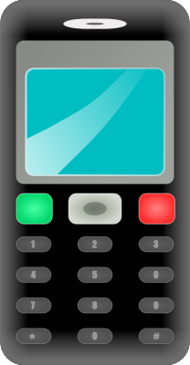

Pienennä sivua niin näen, toimiiko responsiivisuus.
One plus 7T on puhelin vuodelta 2020..
One plus 7T on puhelin vuodelta 2020.
Lenovo S7 vuoden vanha kannettava tietokone
Lenovo S7 Prosessori 1x AMD Ryzen™ 5 5600H Processor(Ryzen™ 5 5600H) Muisti 1x 8 GB DDR4-3200 1x 8GB DDR4 3200 Operating System Windows 10 Home 64 Kovalevyt 1x 512GBSSDPCIe3x4 Langaton verkko 1x Killer Wi-Fi 6 1650x 2x2 AX; Bluetooth® 5.1 or above Portit 1x eGPU Dock; Headphone and Mic array (2 in 1 combo port) 3.5mm; 2 Type-C (DP 1.4 USB 3.2 Gen2) Kamera 1x 720P HD with Privacy Shutter Grafiikka 1x NVIDIA® GeForce RTX™ 3060 6GB
Ostettu Giggantin tarjouksista oman käyttöön
Muut ominaisuudet - 27" IPSWQHD-paneeli - Suurin tuettu resoluutio: 2560 x 1440 - 1000:1 staattinen kontrasti - 350 cd/m2 kirkkaus - 165 Hz virkistystaajuus - HDR10-tuki - Adaptive-Sync - 1 ms vasteaika.